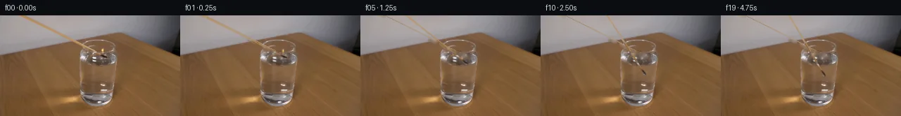

![首帧]()

Round 00
2026-11-05T11:04:45.486316+00:00像素候选变化代码 +230/−0inspection 更新
pixels 465291e95f417d68 · code c2cb210fc4bb1c2c
查看本轮 generate.py 真实 diff
--- previous/generate.py
+++ current/generate.py
@@ -0,0 +1,230 @@
+"""Deterministic local photographic pixel animation; no generative model."""
+from pathlib import Path
+import json
+import numpy as np
+import cv2
+from PIL import Image, ImageDraw
+from scipy.ndimage import map_coordinates, gaussian_filter
+from artifact_io import save
+
+ROOT = Path(__file__).resolve().parent
+S = 4
+H, W = 144, 256
+source = np.asarray(Image.open(ROOT / 'first_frame.png').convert('RGB'))
+original = source.astype(np.float64)
+y, x = np.mgrid[:H, :W].astype(float)
+guide = np.array([125., 48.])
+angle0 = np.arctan2(12., 24.)
+d0 = np.array([np.cos(angle0), np.sin(angle0)])
+n0 = np.array([-d0[1], d0[0]])
+initial_length = np.hypot(24., 12.)
+long0 = (x-guide[0])*d0[0] + (y-guide[1])*d0[1]
+cross0 = (x-guide[0])*n0[0] + (y-guide[1])*n0[1]
+
+
+def smooth(a, b, z):
+ v = np.clip((z-a)/(b-a), 0, 1)
+ return v*v*(3-2*v)
+
+
+# Narrow removal mask for the original shaft, burned head and flame.
+shaft_mask = (abs(cross0) < 2.3) & (long0 < 21.2)
+head_mask = (((long0-25.5)/6.4)**2 + (cross0/3.1)**2 < 1)
+flame_mask = ((x-146.)/3.7)**2 + ((y-49.4)/6.4)**2 < 1
+flame_reflection = (((x-146.)/2.8)**2 + ((y-56.6)/2.2)**2 < 1)
+erase = shaft_mask | head_mask | flame_mask | flame_reflection
+clean = cv2.inpaint(source, erase.astype('uint8')*255, 4, cv2.INPAINT_TELEA).astype(float)
+
+# Across the wall and table, use transverse photographic interpolation to
+# avoid a long Telea smoothing streak. Restrict this to the uncomplicated
+# background, away from the glass rim.
+before_glass = shaft_mask & (x < 112)
+distance = 4.5
+plus_x = x + (distance-cross0)*n0[0]
+plus_y = y + (distance-cross0)*n0[1]
+minus_x = x + (-distance-cross0)*n0[0]
+minus_y = y + (-distance-cross0)*n0[1]
+for c in range(3):
+ pa = map_coordinates(original[..., c], [plus_y, plus_x], order=1, mode='nearest')
+ pb = map_coordinates(original[..., c], [minus_y, minus_x], order=1, mode='nearest')
+ a = np.clip((cross0+distance)/(2*distance), 0, 1)
+ interp = pa*a+pb*(1-a)
+ clean[..., c][before_glass] = interp[before_glass]
+Image.fromarray(np.uint8(np.clip(clean, 0, 255))).save(ROOT / '.tmp/clean_background.png')
+
+# All transformed objects use a subpixel grid. Source texture is sampled from
+# the input photograph, including the actual charred match head.
+Y, X = np.mgrid[:H*S, :W*S].astype(float)
+X = (X+.5)/S-.5
+Y = (Y+.5)/S-.5
+
+
+def sample_picture(pic, sx, sy):
+ return np.stack([map_coordinates(pic[..., c], [sy, sx], order=1, mode='nearest')
+ for c in range(3)], axis=-1)
+
+
+def down(pic):
+ return pic.reshape(H, S, W, S, 3).mean(axis=(1, 3))
+
+
+water_ellipse = ((x-139.)/23.8)**2 + ((y-63.)/7.6)**2
+water_mask = 1-smooth(.84, 1.04, water_ellipse)
+water_mask *= smooth(54., 58., y)
+rim_r = np.sqrt(((X-139)/25.0)**2 + ((Y-44)/9.0)**2)
+rim_mask = np.exp(-((rim_r-1)/.07)**2)*smooth(44., 48., Y)
+rim_mask *= .82
+surface_y = 63.0
+poses = []
+frames = [source.copy()]
+poses.append({'frame': 0, 'head_x': 149., 'head_y': 60.,
+ 'angle_degrees': float(np.degrees(angle0)), 'flame': 1.})
+
+
+def make_frame(k):
+ t = k/4
+ e = .5-.5*np.cos(np.pi*min(t/3, 1.))
+ # Coupled rotation and insertion keep the shaft passing through the opening.
… diff truncated; 143 more lines …